Resolució del circuit¶
En aquesta unitat estudiarem com resoldre circuits amb resistències per trobar els corrents i les tensions que circulen per ells.
Índex de contingut:
Lleis i fórmules utilitzades¶
Les equacions que utilitzarem per resoldre els circuits són la llei d'Ohm i les lleis dels circuits en paral·lel i en sèrie.
També podem utilitzar les fórmules, que ja hem estudiat, a partir de les resistències equivalents a un circuit en sèrie i a un circuit paral·lel.
- Fórmules de llei d'Ohm
- Lleis de circuits en sèrie
- El corrent que circula per diverses resistències de sèries és el mateix per a tots ells.
- La tensió total d’un circuit de sèrie és igual a la suma de les tensions de cadascuna de les seves resistències.
- Lleis de circuits paral·lels
- El corrent total que circula per diverses resistències paral·leles és igual a la suma dels corrents que circulen per les resistències.
- La tensió de cadascuna de les resistències que són paral·leles és la mateixa per a totes elles.
- Resistència equivalent a un circuit de sèrie


- Resistència equivalent a un circuit paral·lel


Cadascun dels circuits que analitzarem tindrà una xarxa amb la tensió, la intensitat de corrent i la resistència de cada component. Aquesta graella haurà d’omplir -se de les solucions que estem obtenint quan apliquem les fórmules anteriors, fins que la xarxa sencera no estigui completa i coneixem tots els valors del circuit.
Divisor de tensió amb dues resistències¶
Aquest circuit s'utilitza àmpliament en l'electrònica per obtenir tensions inferiors a la tensió d'alimentació. Consta de dues resistències connectades en sèrie entre elles i els dos terminals alimentaris.
Si tenim un circuit amb una tensió d’alimentació de 5 volts i necessitem una tensió de 3 volts, el divisor de tensió és la manera més fàcil d’aconseguir -la.
A la imatge següent podem veure el circuit de divisor de tensió.
{kind=link}
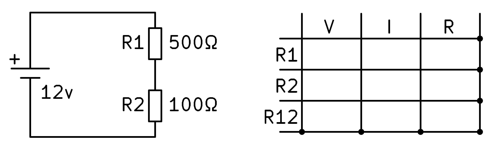
Per resoldre el circuit comencem escrivint a la taula els valors de les resistències que coneixem, R1 i R2.
{kind=link}
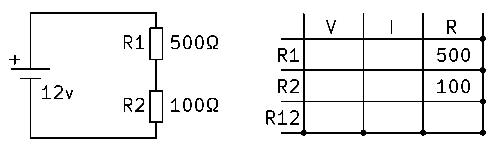
A continuació, escrivim a la taula els valors de tensió que coneixem, que en aquest cas serà la tensió total de les dues resistències R1 i R2 en sèrie, que coincideix amb la tensió de la pila.
{kind=link}
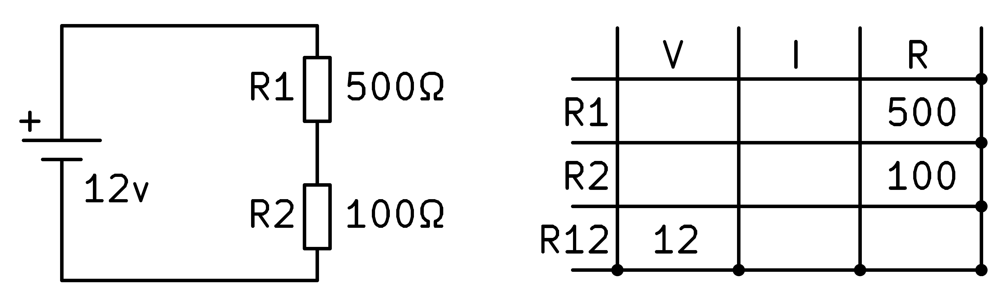
Ara hem de mirar si podeu resoldre qualsevol graella amb les fórmules que coneixem. La resistència total R12 es pot calcular amb la fórmula de les resistències de la sèrie, és a dir, afegint les dues resistències.
{kind=link}
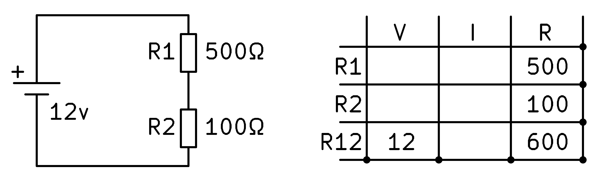
Per continuar, a la darrera fila tenim tensió i resistència per tal de trobar la intensitat amb la llei d’Ohm. Dividint la tensió entre la resistència, obtenim 20 amplificadors de corrent.
{kind=link}
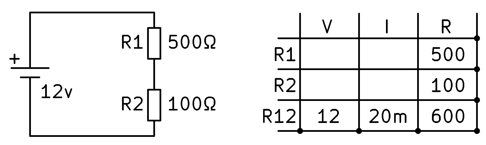
Ara podem aplicar la llei dels circuits de la sèrie que diu que el corrent serà el mateix per a tots els components del circuit.
{kind=link}
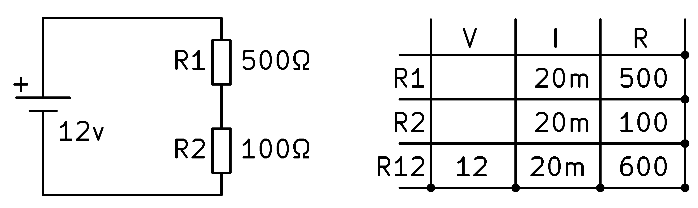
Finalment, amb la llei d'Ohm, podem trobar les tensions en cadascuna de les resistències multiplicant el corrent per resistència.
{kind=link}
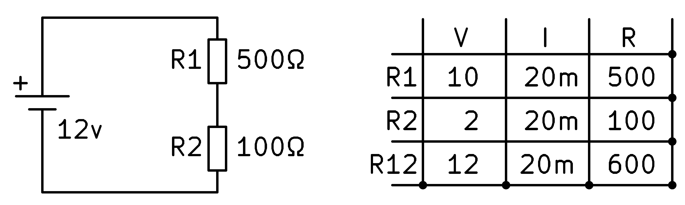
I el circuit es resol completament.
La tensió de resistència R2 serà igual a 2 volts, una tensió inferior a la tensió d’alimentació perquè aquest circuit ha dividit ** la tensió d’alimentació entre 6.
Divisor de tensió amb dues resistència desconeguda¶
En aquesta secció solucionarem un circuit en sèrie en el qual no coneixem el valor de les resistències, només coneixem el corrent que circula pel circuit (10m) i la tensió que volem obtenir en R2 (9V).
{kind=link}
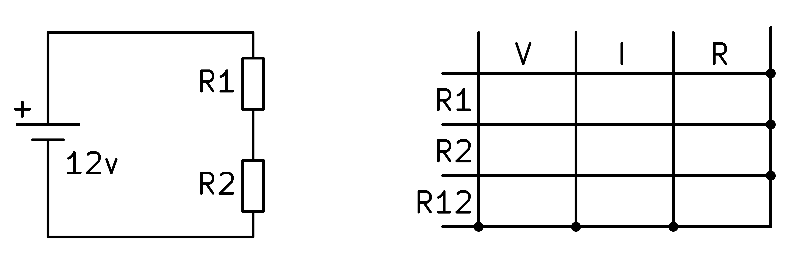
Comencem omplint la taula amb els valors que coneixem del circuit.
{kind=link}
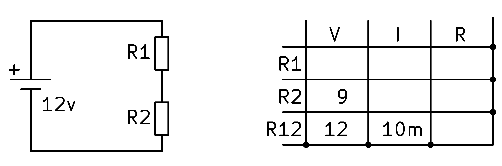
A continuació, podem calcular la resistència total R12 aplicant la llei d'Ohm.
{kind=link}
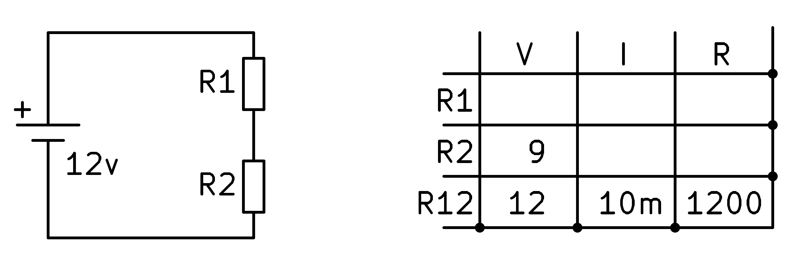
Per continuar, apliquem la llei dels components de la sèrie que diu que el corrent per tots els elements del circuit és el mateix.
{kind=link}
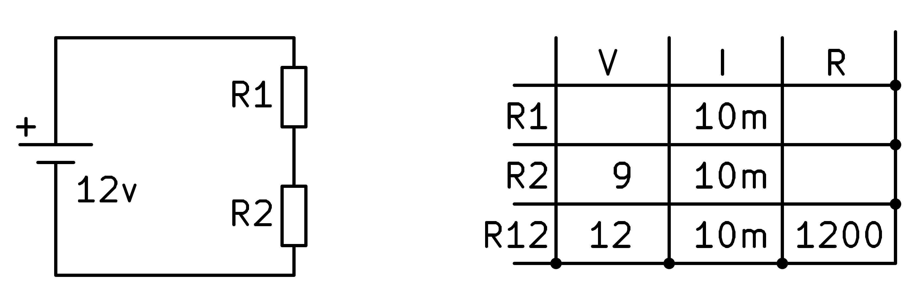
Ara podem tornar a aplicar la llei d’Ohm a la segona resistència per trobar el seu valor.
{kind=link}
En aquest moment podem continuar aplicant la llei dels circuits de la sèrie que diu que la tensió total de les resistències és igual a la suma de les tensions de cada resistència.
És a dir: v_r1 + v_r2 = 12v -> v_r1 = 12v - 9v = 3V
{kind=link}
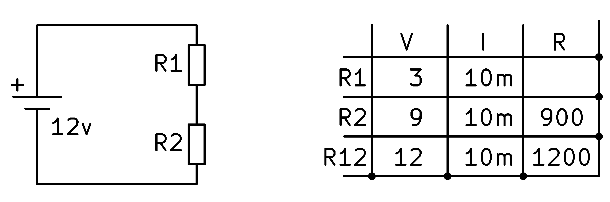
Finalment, apliquem la llei d’Ohm a la primera resistència i trobem el seu valor.
{kind=link}
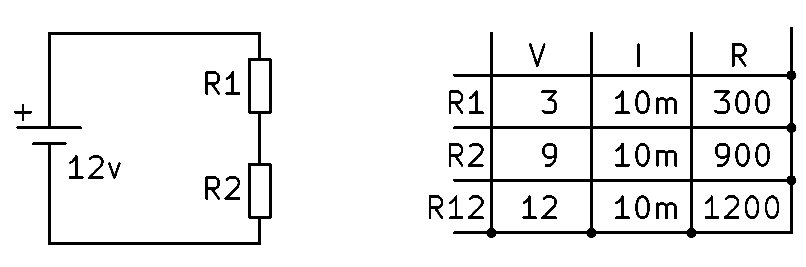
En aquesta darrera caixa també podríem haver aplicat la fórmula de l’equivalent a les resistències de la sèrie. Sabent que R1 + R2 = R12, es pot calcular fàcilment que R1 ha de valer 300 ohms.
Circuit paral·lel de sèries mixtes¶
En aquesta secció solucionarem un circuit mixt, amb connexions en sèrie i paral·leles, en què coneixem el valor de tota resistència.
Comencem copiant a la taula els valors de resistència i tensió que ja coneixem.
{kind=link}
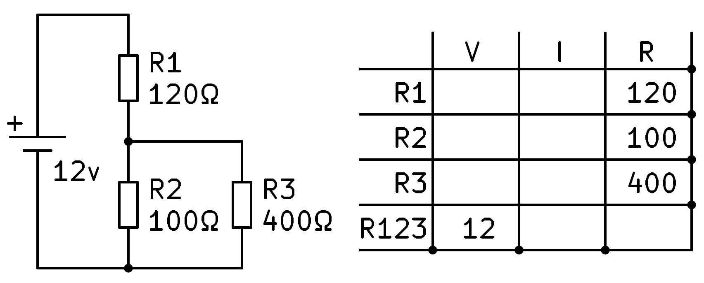
A partir d’aquí no tenim dades per resoldre cap de les tres primeres files. La primera tasca serà calcular la resistència equivalent de les tres resistències del circuit.
Primer trobem el paral·lel de 100 ohms i 400 ohms que ens proporciona el resultat de 80 ohms.
A continuació, calculem l’equivalent en la resistència a la sèrie R1, amb 120 ohms, i el resultat anterior, 80 ohms. Afegir tots dos ens dóna un resultat total de 200 ohms, que podem escriure al forat corresponent a la resistència R123.
{kind=link}
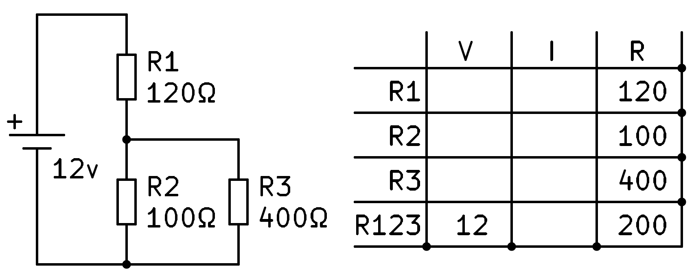
Ara podem aplicar la llei d’Ohm a la quarta fila per trobar la intensitat total que circula pel circuit, 60 mil·límetres.
{kind=link}
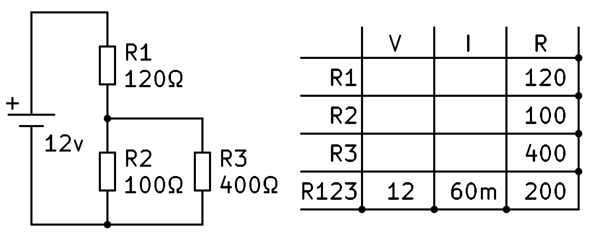
Tot el corrent que circula pel circuit circularà per R1 per ser sèries. Amb aquestes dades, podem omplir el corrent R1 copiant el corrent total.
{kind=link}
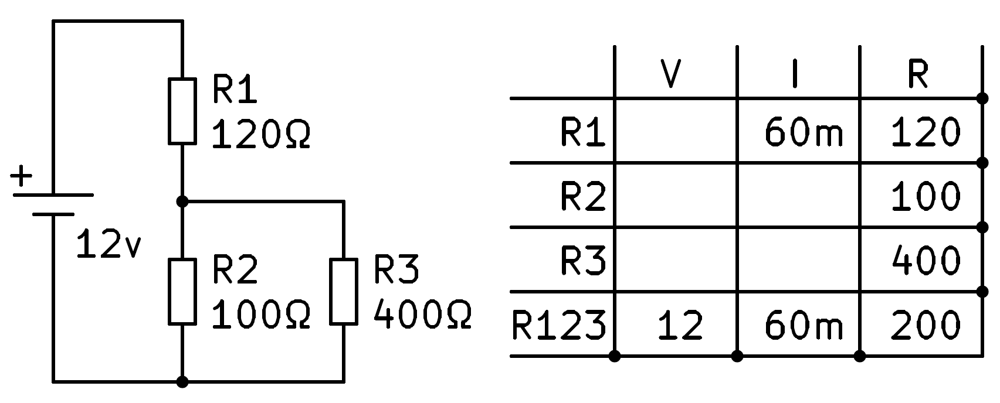
En aquest moment podem aplicar la llei d’Ohm a la primera fila per calcular la tensió en resistència R1.
{kind=link}
La tensió total de la pila, de 12V, serà igual a la suma de les tensions de les dues sèries de circuits, R1 i R23.
Esborrant hem de tensió en resistències R2 i R3 és de 12V - 7.2V = 4.8V, que podem escriure a les caixes corresponents.
{kind=link}
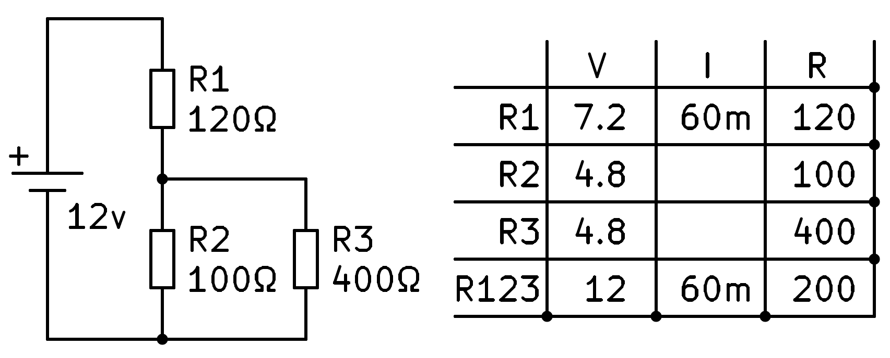
Ara podem aplicar la llei d’Ohm a la segona i tercera files per acabar de calcular els valors d’intensitat que encara no sabem.
{kind=link}
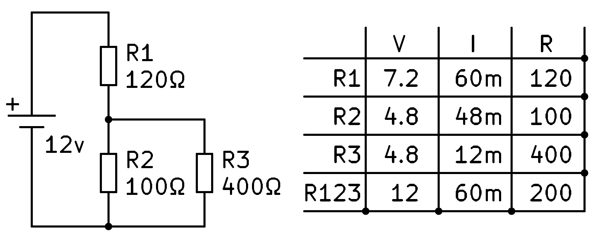
Finalment, comprovarem que la suma dels corrents en R2 i en R3 és igual al corrent total que circula pel circuit.
Exercicis¶
Exercicis per resoldre circuits.
: Descarregueu: `Exercicis per resoldre circuits. PDF <Electric-Elèctric-Resolver-Circuito Format.pdf> `
: Descarregueu: Exercicis per resoldre circuits. KICAD <Electric-Elèctric-Resolve-Circuito. Zip>
Qüestionaris¶
Qüestionaris sobre resolució de circuits.